模式识别与统计学习
第一章 统计学习方法概述
❝ 机器学习是一门人工智能的科学, 该领域的主要研究对象是人工智能, 特别是如何在经验学习中改善具体算法的性能。 ❞
—— 机器学习是对能通过经验自动改进的计算机算法的研究。
统计学习
- 概念：计算机基于数据构建概率统计模型，运用模型对数据进行预测和分析。
- 研究对象：数据、基本假设。
- 目的：对数据（特别是未知数据）进行预测和分析。
🤔 为什么需要机器学习？
- 数据量太大：人脑无法处理海量维度。
- 知识盲区：人类无法解释专业知识，或专业知识本身不存在。
发展历程与三要素
模式识别与机器学习发展历程：
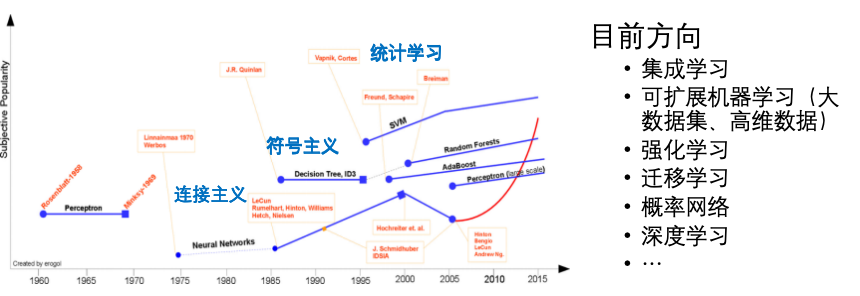
核心：统计学三要素
1. 模型 (Model)
- 非概率模型：
- 假设空间：决策函数 $F=\{f \mid Y=f(X)\}$
- 参数空间：$F=\{f \mid Y=f_\theta(X), \theta \in \mathbb{R}^n\}$
- 概率模型：
- 假设空间：条件概率 $F=\{P \mid P(Y|X)\}$
- 参数空间：$F=\{P \mid P_\theta(Y|X), \theta \in \mathbb{R}^n\}$
2. 策略 (Strategy)
- 损失函数：度量一次预测的好坏。
- 风险函数：度量平均意义下的好坏（损失函数的期望）。
3. 算法 (Algorithm)
- 求解得到最优模型（通常指最优化问题的求解算法）。
分类体系
- 学习分类：监督学习、无监督学习、强化学习 （具体概念）
- 模型分类：(非)概率、(非)线性、(非)参数、生成/判别
混淆矩阵
⚡️ 快速记忆口诀：
先看预测，再看结果
- 预测为真 $\rightarrow$ P (Positive)；预测为假 $\rightarrow$ N (Negative)
- 预测正确 $\rightarrow$ T (True)；预测错误 $\rightarrow$ F (False)
核心指标：
- 精确率 (Precision)：$P=\frac{TP}{TP+FP}$ （你认为是对的里面，有多少真是对的？）
- 召回率 (Recall)：$R=\frac{TP}{TP+FN}$ （把精确率的 FP 换成 FN）
- F1值：$\frac{2}{F_1} = \frac{1}{P} + \frac{1}{R}$
过拟合 (Overfitting)
在训练数据上表现很好（把噪声也学进去了），对于未知数据表现很差。
解决办法：
- 正则化
- 增大数据集
- 早停机制
- 减少模型参数
欠拟合 (Underfitting)
模型过于简单，未能学习到数据中的基本规律，导致在训练集和未知数据上表现均不理想。
解决办法：
- 增加模型复杂度
- 增加特征数量
- 减少或移除正则化参数
- 延长训练时间/充分训练
第二章 线性感知机
1. 超平面 (Hyperplane)
怎么理解？
定义：在 $n$ 维空间中，将空间一分为二的 $n-1$ 维子空间。
- 超平面方程：
点到超平面的几何距离
2. 感知机模型 (Perceptron)
关键词：
线性二分模型、判别模型
(1) 模型
- 输入空间：$x \in R^n$
- 输出空间：$y \in \{+1, -1\}$
假设空间：
符号函数 (Sign Function)：
模型参数：
- $w$：权值向量
- $b$：偏置
- $w \cdot x$：内积
(2) 策略
感知机的目标是最小化误分类点到超平面的总距离。
- 损失函数（误分类点集合 $M$）： (注：由于 $\frac{1}{|w|}$ 不影响梯度方向，为了计算简便，在损失函数中省略)
(3) 算法
转化为求解最优化问题：
3. 算法实现形式
(1) 梯度下降法
- 输入：训练数据集 $T = {(x_1, y_1), \dots, (x_N, y_N)}$，学习率 $\eta$ ($0 < \eta \le 1$)
- 输出：$w, b$
算法步骤：
- 初始化：$w_0 \leftarrow 0, b_0 \leftarrow 0$，$\eta$看题目
- 选取数据：$(x_i, y_i)$
- 判断误分类：
如果满足条件 $y_i (w \cdot x_i + b) \le 0$，则更新参数： - 循环：转至 (2)，直至训练集中没有误分类点。
特点：直观，但如果数据量大或维度高，计算量大。
(2) 对偶形式
- 核心思想：将 $w$ 表示为实例 $x_i$ 和标记 $y_i$ 的线性组合。
- 输出：$\alpha, b$
- 假设空间变为： (其中 $\alpha = (\alpha_1, \alpha_2, \dots, \alpha_N)^T$)
算法步骤：
- 初始化：$\alpha \leftarrow 0, b \leftarrow 0$
- 选取数据：$(x_i, y_i)$
- 判断误分类：
如果满足条件：则更新参数：（$b$和梯度下降一样） - 循环：转至 (2) 直到无误分类数据。
💡 重点：如何计算判别式：
在对偶形式中，样本之间的内积计算非常频繁，通常预先计算 Gram 矩阵 并存储：
注意：$x_i$ 有几个，$\alpha_i$ 就有几个 $=0$（初始化）
做题技巧（表格法迭代）：
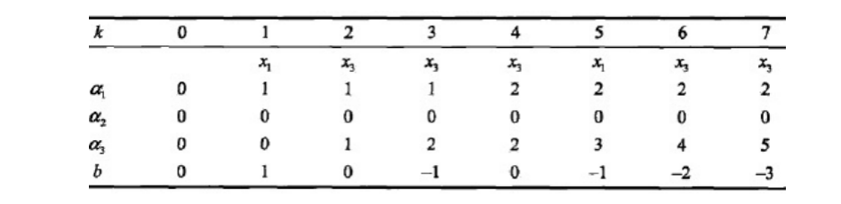
4. 感知机算法收敛性定理
收敛定理 (Novikoff)：
误分类次数 $k$ 有上界。这意味着，只要训练数据集是线性可分的，感知机算法一定能收敛（在有限步内找到解）。局限性：
- 解不唯一：解依赖于初值的选择，也依赖于误分类点的选择顺序。
- 震荡：如果数据集线性不可分，算法会一直震荡，无法做到完全正确分类。
下一步引申：
为了得到唯一且最优的分离超平面，我们需要引入更强的约束 —— 这就是 SVM (支持向量机) 的由来。
第三章 $K$近邻
1. 算法简介
关键词：
分类模型、回归模型、适用于(数值型、标称型)数据、1-NN训练错误率=0
算法特点及优缺点
懒惰学习 (Lazy Learning)
定义：无实质性模型训练，利用训练集数据对特征空间进行划分。测试时，要计算输入实例距每个样本的距离。
| 优点 (Pros) | 缺点 (Cons) |
|---|---|
| 精确度高 | 时间复杂度高（花时间） |
| 对异常值不敏感 | 空间复杂度高（耗内存） |
| 无数据输入假定（无训练阶段） | - |
$K$ 值的选择
$K$ 值较小 (模型复杂)
- 近似误差（偏差）减小 $\rightarrow$ 估计误差（方差）增大（对噪声敏感）
- 噪声敏感
- 整体模型变得复杂，容易发生过拟合
$K$ 值较大 (模型简单)
- 近似误差增大 $\rightarrow$ 估计误差减小
- 整体的模型变得简单，但容易发生欠拟合
通过交叉验证选择 $K$ 值
- 模型准确率随 $K$ 值的变化非单调
- $K$ 一般低于训练集样本容量的平方根：$k < \sqrt{N}$
- 经验上，$k$ 值一般不超过 20：$k < 20$
$kNN$ 算法的应用挑战
- 距离函数确定
- 距离度量方式众多
- $k$ 值确定
- $k$ 值对模型精度的影响非单调
- 边界易出错 (软分类)
- 特征的选择
- 不同特征的影响程度不同
- 复杂度
- 需要计算测试例 $x’$ 与所有训练数据的距离
- 计算复杂度正比于训练样本容量
2. 距离度量
$L_p$ 距离
欧氏距离 ($L_2$)：
曼哈顿距离 ($L_1$)：
切比雪夫距离 ($L_{\infty}$)：（取同维度坐标差最大者）
马氏距离
- 了解即可
距离度量的性质
- 非负性 (non-negativity):
- 自反性 (reflexivity):
- 对称性 (symmetry):
- 三角不等式 (triangle inequality):
3. 分类决策规则
- 核心规则：多数表决规则。
- 理论意义：等价于 $0-1$ 损失函数下的经验风险最小化。
- 误分类概率：在一个领域中，与领域样本特征不同的总数 $\div$ 领域样本总数。
4. kd 树
搜索方法
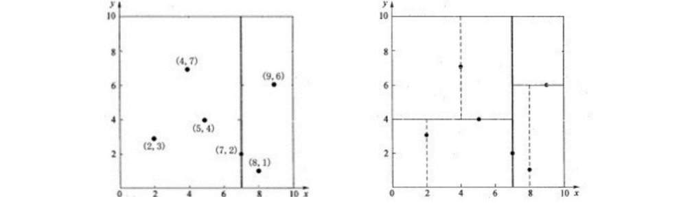
(注：$kd$ 树是二叉树)
- 先在 $x$ 轴找到中位数，垂直划分。
- 再在划分的两块区域里找 $y$ 轴中位数，继续划分。
- 直至划分完毕。
$kd$ 树计算复杂度
- 一般情况：时间复杂度为 $O(\log N)$
- 最坏情况：时间复杂度 $O(N)$
- 适用场景：更适用于训练实例维度远大于空间维度时的搜索。~~
第四章 贝叶斯方法
1. 概率统计基础知识
$pmf$ & $pdf$
概率质量函数（Probability mass function）
定义：$P(X=x_i)$，即离散随机变量在各特定取值上的概率。
- $\sum_{i} P(X=x_i) = 1$
- $P(X=x_i \cap X=x_j) = 0 \text{ if } i \neq j$
- $P(X=x_i \cup X=x_j) = P(X=x_i) + P(X=x_j) \text{ if } i \neq j$
- $P(X=x_1 \cup X=x_2 \cup \dots \cup X=x_k) = 1$
概率密度函数（Probability density function）
定义：描述了连续随机变量 $x$ 的概率密度。
- $f(x) \ge 0, \forall x$
- $\int_{-\infty}^{+\infty} f(x) = 1$
- 真实概率通过 pdf 的积分得到
- e.g. $X$ 取 0-1 的概率为：
联合概率分布
描述两个或多个随机变量同时发生的概率。
- 离散型：$P(X=x, Y=y)$
- 性质：$\sum_x \sum_y P(X=x, Y=y) = 1$
- 连续型：$f(x, y)$
- 性质：$\iint f(x, y) dx dy = 1$
- 边缘分布 (Marginalization)：从联合分布中求出单个变量的分布。
- 独立性：若 $X$ 与 $Y$ 相互独立，则：
条件概率
定义：在事件 $B$ 已经发生的条件下，事件 $A$ 发生的概率。
（其中 $P(A, B)$ 是联合概率，$P(B)$ 是边缘概率）
链式法则
将联合概率分解为条件概率的乘积。
对于两个变量：
推广到 $n$ 个变量：
全概率公式
如果事件组 $B_1, B_2, \dots, B_n$ 构成样本空间的一个划分（互斥且完备），则对于任意事件 $A$：
- 直观理解：求 $A$ 发生的概率，等于把 $A$ 在各种不同情况（$B_i$）下发生的概率加权求和。
均值与方差
- 期望 (Expectation / Mean) $\mu$：
- 离散：$E[X] = \sum x_i P(x_i)$
- 连续：$E[X] = \int_{-\infty}^{+\infty} x f(x) dx$
- 性质：$E[aX + b] = aE[X] + b$
- 方差 (Variance) $\sigma^2$：衡量数据的离散程度。
协方差
定义：衡量两个变量 $X$ 和 $Y$ 总体误差的期望，反映它们之间变化的方向。
- $Cov > 0$：正相关
- $Cov < 0$：负相关
- $Cov = 0$：不相关（线性无关）
相关性
皮尔逊相关系数 (Correlation Coefficient) $\rho$：
将协方差归一化，消除了量纲的影响，衡量线性相关的强度。
- 取值范围：$[-1, 1]$。
（$1$ 为完全正相关，$-1$ 为完全负相关，$0$ 为无线性相关）
2. 朴素贝叶斯
贝叶斯
贝叶斯公式 (Bayes' Theorem)：- $P(Y|X)$: 后验概率 (Posterior)
- $P(X|Y)$: 似然 (Likelihood)
- $P(Y)$: 先验概率 (Prior)
- $P(X)$: 证据 (Evidence)
- 贝叶斯决策：
- 已知类条件概率密度参数表达式和先验概率
- 利用贝叶斯公式转换成后验概率
- 根据后验概率大小进行决策分类
朴素贝叶斯
基于贝叶斯定理与特征条件独立假设的分类算法。
- “朴素” (Naive) 的含义：假设样本的各个特征之间相互独立。
朴素贝叶斯分类器
给定输入特征向量 $\mathbf{x} = (x_1, x_2, \dots, x_n)$，预测类别 $y$。
我们只需最大化分子部分(这个公式考试一定要写)：
- $P(y)$：先验概率，即类别的频率。
- $P(x_i|y)$：条件概率（似然），即在某类中观察到该特征的概率。
朴素贝叶斯参数估计
- 极大似然估计 (MLE)
直接使用频率来估计概率。- $P(y = c_k) = \frac{N_{c_k}}{N}$
- $P(x_i = a | y = c_k) = \frac{N_{ik}}{N_{c_k}}$
- $\hat{\theta} = \frac{\sum_{i=1}^{N} x_i}{N}$
- 贝叶斯估计 (Bayes)
引入平滑项（如拉普拉斯平滑）解决零概率问题。- $P(x_i = a | y = c_k) = \frac{N_{ik} + \lambda}{N_{c_k} + \lambda S_i}$
- 其中 $\lambda \ge 0$ 为平滑系数（常取 1），$S_i$ 为特征 $x_i$ 可能取值的个数。
- $\hat{\theta} = \frac{\sum_{i=1}^{N} x_i+\alpha}{N+\alpha+\beta}$ ($\hat{\theta}$ ~ $Beta(\alpha,\beta)$)
- 拉普拉斯平滑 (Laplace Smoothing)
解决零概率问题（即某个特征在训练集中未出现导致概率为0）。- $\lambda$: 平滑系数（通常取 1）。
- $S_i$: 特征 $x_i$ 可能取值的个数。
第五章 决策树
1. 决策树模型
决策树的表示
- 一种描述对实例分类的 树形结构，包含：
- 根结点 (Root Node)：最上面的结点，是整个决策树的开始。
- 内部结点 (Internal Node)：代表一个问题或者决策，通常对应待分类对象的属性。
- 叶结点 (Leaf Node)：代表一种可能的分类结果。
- 有向边：连接各个结点。
优点
- 可解释性强：推理过程容易理解，可以表示成
If-Then形式。 - 依赖属性取值：推理过程完全依赖于属性变量的取值特点。
- 特征筛选：可自动忽略对目标变量没有贡献的属性变量，为判断属性重要性、减少变量数目提供参考。
学习目的
- 理想的决策树（通常有以下3种目标）：
- 叶结点数最少
- 叶结点深度最小
- 叶结点数最少且叶结点深度最小
- 现实困境：找到这种绝对最优的决策树是 NP难题。
- 实际目标：找到 尽可能 趋向于最优的决策树。
2. 特征选择与信息熵
熵（Entropy）
- 定义：度量样本集合 纯度 (Purity) 最常用的一种指标，代表随机变量不确定性的度量。
规律：熵越大，随机变量的不确定性就越大。
- 计算公式：
设 $X$ 是一个取有限个值的离散随机变量，其概率分布为 $P(X=x_i) = p_i, \quad i=1,2,\dots,n$，则随机变量 $X$ 的熵 $H(X)$ 定义为： 注：若 $p_i=0$，则定义 $0 \log 0 = 0$。
条件熵 (Conditional Entropy)
- 定义：表示在已知随机变量 $X$ 的条件下，随机变量 $Y$ 的不确定性。
- 计算公式： 其中 $p_i = P(X=x_i)$。
信息增益 (Information Gain)
- 定义：特征 $A$ 对训练数据集 $D$ 的信息增益 $g(D, A)$，定义为集合 $D$ 的经验熵 $H(D)$ 与特征 $A$ 给定条件下 $D$ 的经验条件熵 $H(D|A)$ 之差。
- 物理意义：由于特征 $A$ 而使得对数据集 $D$ 的分类不确定性减少的程度。信息增益大的特征具有更强的分类能力。
信息增益比 (Gain Ratio)
- 背景：信息增益倾向于选择 取值较多 的特征（例如唯一的 ID 号），这往往不是我们想要的。
- 定义：特征 $A$ 对训练数据集 $D$ 的信息增益比 $g_R(D, A)$ 定义为信息增益 $g(D, A)$ 与训练数据集 $D$ 关于特征 $A$ 的值的熵 $H_A(D)$ 之比： 其中， $n$ 是特征 $A$ 取值的个数。
3. 经典算法
$ID3$ 算法
- 测试属性：
信息增益
具体计算流程：（设$C_1+C_2=D$）
计算不考虑特征的信息熵：
其中 $|D|$ 为样本总数，$|C_k|$ 为属于第 $k$ 类的样本数(eg: 买/不买)。
计算条件熵：
- 先选择一个 特征 $A_i$，将数据集 $D$ 根据特征 $A_i$ 的不同取值划分为 $n$ 个子集 $D_1, D_2, \dots, D_n$。
- 计算特征 $A_i$ 下不同取值 $D_i$ 的信息熵 $H(D_i)$：其中，$C_k$ 是在集合 $D_i$ 里的第 $k$ 种类别的数量 (eg: 买/不买)。
- 计算条件熵 $H(D|A_i)$：
计算信息增益：
特征选择：
选取 信息增益最大 的特征$A_i$作为当前的分裂节点（根节点或内部节点）。递归构建：
对子节点重复以上步骤，以此类推，直至分类完全（或满足停止条件）。
$C4.5$ 算法
- 测试属性：
信息增益比（除选择特征的标准不同外，其余步骤与 $ID3$ 一致）。 - 计算完信息增益后，计算信息增益比：其中，特征固有值：这里 $|D|$ 是样本总数，注意和 $H(D_i)$ 的计算区分。
过拟合
- 现象：决策树算法增长树的每一个分支的深度，直到恰好能对训练样例比较完美地分类。
- 原因：当数据中 有噪声 或 训练样例数量太少，以至于不能产生目标函数的有代表性的采样时，简单算法产生的树会过拟合训练样例。
4. $CART$算法
基尼指数 (Gini Index)
- 定义：度量数据纯度的指标。基尼指数越小，模型的不确定性越小，纯度越高。
计算公式：
假设有 $K$ 个类，样本点属于第 $k$ 类的概率为 $p_k$，则概率分布的基尼指数为：对于给定的样本集合 $D$，其基尼指数为：
其中 $C_k$ 是 $D$ 中属于第 $k$ 类的样本子集。
特征下的基尼指数：（一分为二的划分问题）
如果特征 $A$ 的取值将集合 $D$ 划分成 $D_1$ 和 $D_2$ 两部分（注意：CART 生成的是二叉树），则在特征 $A$ 的条件下，集合 $D$ 的基尼指数为：
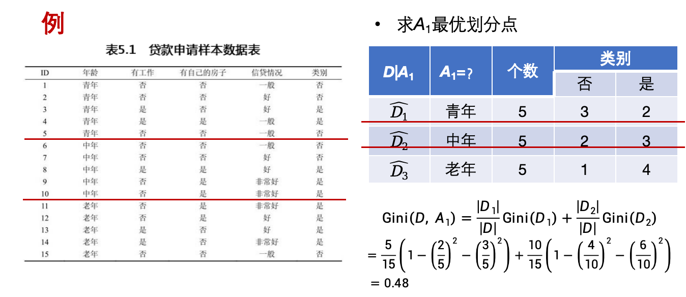
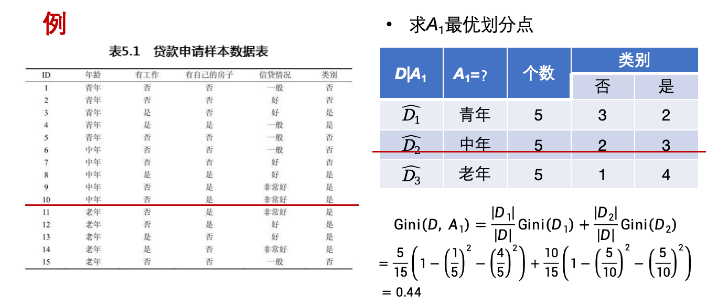- 选择标准：选择使得 基尼指数最小 的特征及其划分点作为最优特征和最优切分点。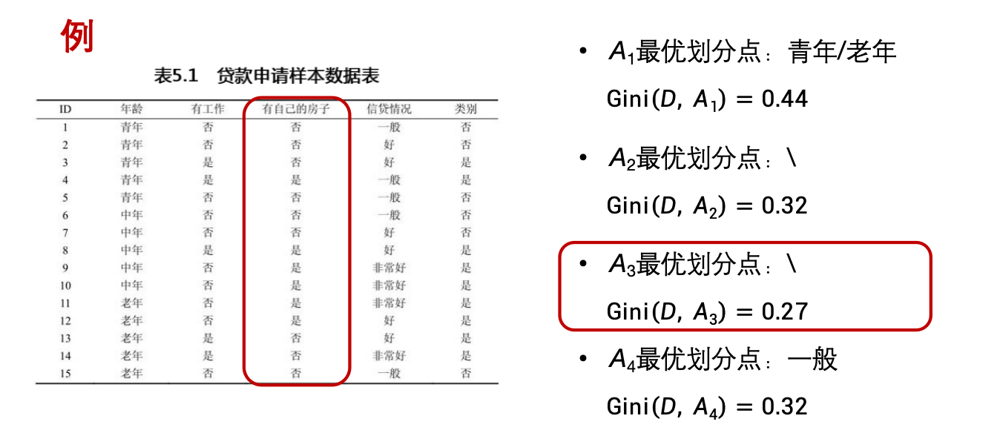

决策树生成
回归树：使用 平方误差最小化 准则。- 分类树：使用 基尼指数最小化 准则。
- 具体生成流程 (分类树)：（上一部分的图片例子可以帮助理解）
- 对训练数据集 $D$ 的每个特征 $A$，以及该特征的每个可能取值 $a$，根据 $A=a$ 与 $A \neq a$ 将 $D$ 分割为 $D_1$ 和 $D_2$。
- 计算该切分下的 $Gini(D, A)$。
- 在所有可能的特征 $A$ 以及它们所有可能的切分点 $a$ 中，选择 基尼指数最小 的特征及其切分点作为最优特征与最优切分点。
- 生成两个子结点，将训练数据集依特征分配到两个子结点中。
- 对子结点递归地调用上述步骤，直到满足停止条件（如结点样本数小于阈值、基尼指数小于阈值或没有更多特征）。
决策树剪枝
- 目的：防止过拟合。
- 手段：剪枝，限定叶节点最小样本数，强制决策树最大深度，交叉验证（$CART$剪枝）。
预剪枝
- 在决策树生成过程中，对每个结点在 划分前先进行估计。
- 若当前结点的划分不能带来决策树 泛化性能提升，则停止划分，并标记当前结点为叶结点。
后剪枝
- 从训练集先生成一棵 完整的决策树。
- 自底而上地考察非叶结点，若将该结点对应的子树替换为叶结点能带来决策树 泛化性能提升，则 将该子树替换为叶结点。
- CART 常用 CCP (Cost-Complexity Pruning, 代价复杂度剪枝) 方法。
对比：一般情形下，后剪枝决策树的欠拟合风险很小，泛化性能优于预剪枝决策树。但训练时间开销比未剪枝决策树和预剪枝决策树要大得多。
5. 随机森林 (Random Forest)
基本概念
- 一种基于 Bagging（装袋法）的集成学习方法。
- 通过构建多棵决策树，并将它们的预测结果进行汇总（分类问题用 多数投票，回归问题用 平均值）来输出最终结果。
- “随机”的含义：体现在 样本选择的随机性 和 特征选择的随机性。
构建流程
Bootstrap 采样 (样本随机)：
- 对于 $N$ 个样本的训练集，有放回地随机抽取 $N$ 次，得到一个新的训练集。
- 未被抽到的样本称为 袋外数据 (Out-of-Bag, OOB)，可用于验证模型泛化能力。
- 重复上述步骤 $k$ 次，生成 $k$ 个独立的训练集。
特征随机选择 (特征随机)：
- 在构建每棵树的每个分裂结点时，不是从所有 $M$ 个特征中选择最优特征，而是随机从 $M$ 个特征中选取 $m$ 个特征 ($m \ll M$) 作为一个子集。
- 从这 $m$ 个特征中选择最优的分裂属性。
生成决策树：
- 利用上述采样和特征子集，完全生长决策树（通常 不剪枝）。
集成输出：
- 分类：所有树投票，票数最多的类别为最终结果。
- 回归：所有树预测值的简单算术平均。
优点
- 准确率高：在许多数据集上表现良好，抗过拟合能力强（因为引入了双重随机性）。
- 并行处理：每棵树互不依赖，可以并行训练，速度快。
- 高维数据友好：能够处理具有成千上万个特征的输入矩阵，而无需进行特征降维。
- 自带评估：可以使用 OOB 数据进行内部评估，无需额外的验证集。
第六章 $Logistic$回归
关键词：映射到[0,1]、分类（虽然叫回归）、判别模型
- 思想：利用线性回归的思路去拟合数据，通过一个函数将预测结果“压缩”到 $[0,1]$，从而表示某种类别发生的概率。
几何意义与决策：
- 二项逻辑回归在几何上是在特征空间中寻找一个超平面（Decision Boundary）来分割两类数据。（通常以 0.5 为概率阈值）：
- 若 $P(Y=1|x) \ge 0.5$，预测为 1 (正类)。
- 若 $P(Y=1|x) < 0.5$，预测为 0 (负类)。
1. 二项$Logistic$回归
事件的几率
事件的几率 (odds)：事件发生与事件不发生的概率之比为
称为事件的发生比 (the odds of experiencing an event)。
对数几率 (log odds)：
Logistic 回归 (对数几率回归)：
模型构建
线性预测：
首先，模型根据输入特征 $x$ 计算一个线性得分（Logits）：$Sigmoid$ 映射：
为了将 $z \in (-\infty, +\infty)$ 映射为概率 $[0,1]$，引入 Sigmoid 函数：
在数学表达上，它有两种等价形式（这也是教科书与PPT中常见的两种写法）：
- 标准倒数形式：
- 指数形式（分子分母同时乘以 $e^z$）：
对应地，预测为负类（$Y=0$）的概率为：
- 参数的向量化表示 (Bias Trick)
在李航《统计学习方法》等教材中，为了简化公式推导，通常会将偏置项 $b$ 并入权重向量 $w$ 中。
- 扩充权重向量：$w = (w^{(1)}, w^{(2)}, \dots, w^{(n)}, b)^T$
- 扩充输入向量：$x = (x^{(1)}, x^{(2)}, \dots, x^{(n)}, 1)^T$
通过这种方式，线性项 $w \cdot x + b$ 就变成了单纯的向量点积 $w \cdot x$。最终模型公式简化为：
模型特点
- 名为“回归”，实际是分类算法。
输入变量与输出变量之间不存在线性关系。- 直接对分类可能进行建模。
- 给出类别的近似概率。
- 任意阶可导凸函数。
多项 $Logistic$ 回归
- 设 $Y$ 的取值集合为 ${1, 2, \cdots, K}$
- 多项 logistic 回归模型：
2. 极大似然函数
通过极大似然估计获得 $Logistic$ 分类器由一组权值系数 $\omega$。
- 对于 $N$ 个观测事件：设：
- 其联合概率密度函数，即似然函数为：
- 取对数，得到
损失函数$L(\omega)$：注意：第三个等号是代入 $\pi(\boldsymbol{x})= P(Y=1|\boldsymbol{x})= \frac{\exp(w \cdot x)}{1 + \exp(w \cdot x)}…$ - 最后，对 $L(\omega)$ 求极大值（梯度下降-求导）, 得到 $\omega$ 的估计值。
三种函数图示：
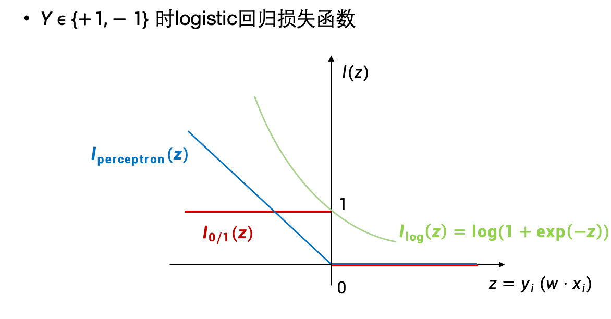
3. 最大熵模型
- 熵最大的模型是最好的模型
4. 模型学习最优化算法
- 梯度下降法
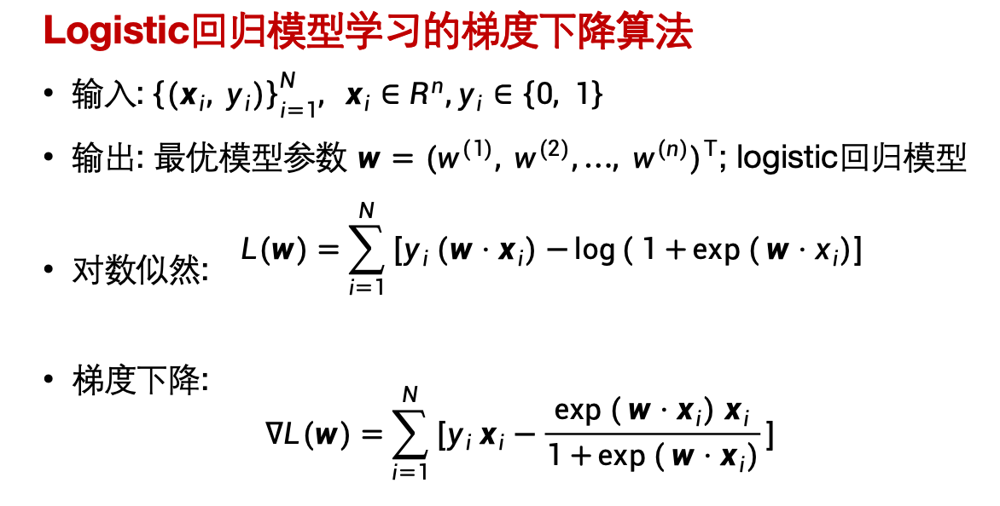
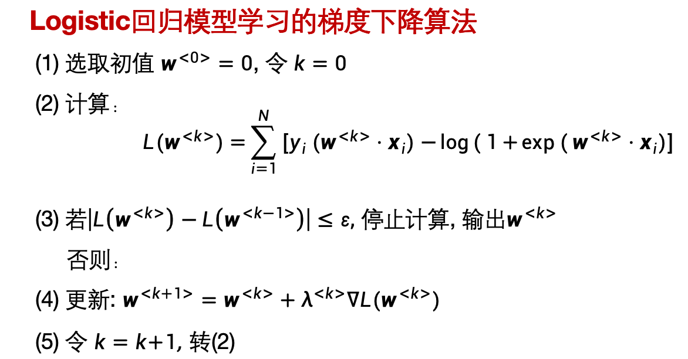 - 牛顿法
- 拟牛顿法
- 改进的迭代尺度法
5. $Logistic Regression$（推导）

推导过程：
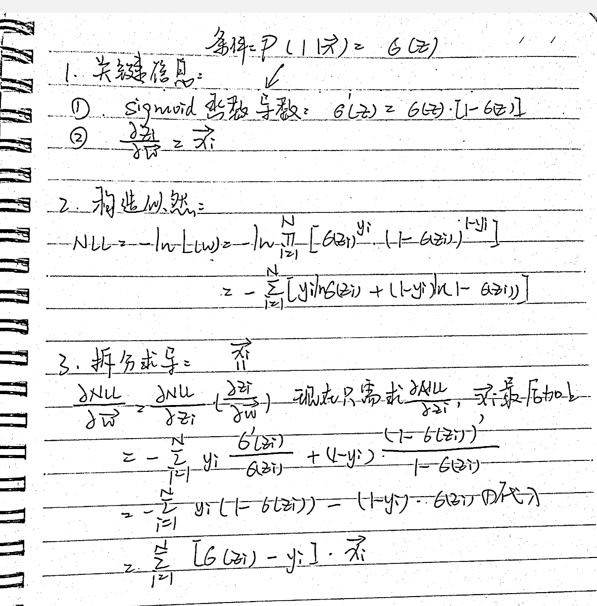
三个关键点：
- $Sigmoid$函数的导数
- 构造概率似然函数
- 把求导拆分成两个求导
第七章 支持向量机
- 定义：在特征空间上的间隔最大线性分类器（与感知机的不同）
- 核技巧，所以存在非线性分类器
- 学习策略：间隔最大化$\longrightarrow$正则化的合页损失函数最小化问题
1. 线性可分 SVM （硬间隔）
- 所有样本必须线性可分，对噪音敏感，容易过拟合。
（1）原始算法
- 构造并求解最优化问题：
- 得到分离超平面：
- 分类决策函数
（2）对偶问题（KKT条件）
原始问题
SVM 的基本型是一个凸二次规划问题。我们的目标是最小化参数的范数（最大化间隔），同时满足分类约束。
A.构造拉格朗日函数
引入拉格朗日乘子 $\alpha = (\alpha_1, \alpha_2, \dots, \alpha_N)^T$，且 $\alpha_i \ge 0$。将约束条件融合到目标函数中：
根据拉格朗日对偶性，原始问题等价于极小极大问题：
其对偶问题则是交换顺序（满足kkt条件），变为极大极小问题：
B.求解对偶问题
- 第一步：求内层最小值 $\min_{w,b} L(w, b, \alpha)$
对 $w$ 和 $b$ 分别求偏导并令其为 0：
- 对 $w$ 求导：
- 对 $b$ 求导：
- 第二步：代回拉格朗日函数
将上述两个关系式代回 $L(w, b, \alpha)$：
展开 $|w|^2$ 项：
- 第三步：最终的对偶问题
此时目标是 $\max_{\alpha}$，通常我们习惯转换为 $\min_{\alpha}$ (取负号)。
最终对偶形式 (Dual Form)：
C.KKT 条件
为了保证对偶问题的解（Dual Optimal）同时也确实是原始问题（Primal Optimal）的解，必须满足 KKT 条件。这是 SVM 具有“稀疏性”（支持向量特性）的数学根源。
对于最优解 $w^{\ast}, b^{\ast}, \alpha^{\ast}$ 必须满足以下四个条件：
1. 稳定性条件 (Stationarity):
即导数为 0：
2. 互补松弛性 (Complementary Slackness) [核心]:
互补松弛性的物理意义：
这个条件告诉我们，对于任意样本 $i$ ，或者 $\alpha_i^{\ast} = 0$ ，或者 $1 - y_i(w^{\ast} \cdot x_i + b^{\ast}) = 0$ 。
- 如果 $\alpha_i^{\ast} = 0$ ，该样本对模型没有贡献（非支持向量）。
- 如果 $\alpha_i^{\ast} > 0$ ，则必须满足 $y_i(w^{\ast} \cdot x_i + b^{\ast}) = 1$ ，即样本点必须位于 间隔边界 上。这些点就是 支持向量。
3. 原始可行性 (Primal Feasibility):
样本必须满足分类间隔约束：
4. 对偶可行性 (Dual Feasibility):
拉格朗日乘子必须非负：
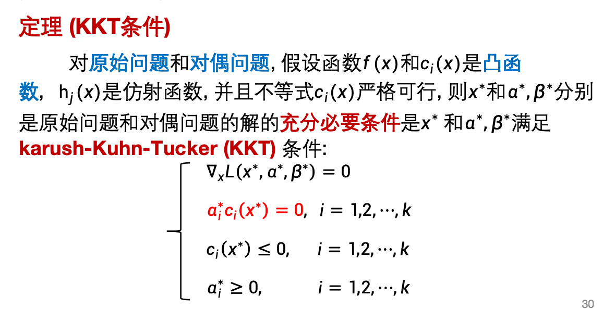
关键点总结
1. 为什么要做对偶？
- 计算效率： 摆脱了对特征维度 $d$ 的依赖，计算复杂度仅与样本数量 $N$ 有关。
- 核技巧 (Kernel Trick)： 最终公式中只包含内积 $(x_i \cdot x_j)$。我们可以直接用核函数 $K(x_i, x_j)$ 替换它，从而在不显式增加维度的情况下解决非线性分类问题。
2. 软间隔 (Soft Margin) 的变化
- 如果是软间隔 SVM，KKT 条件中的对偶可行性变为 $0 \le \alpha_i \le C$。
- 当 $\alpha_i = C$ 时，样本点可能是一个异常点（位于间隔内部或分错）。
2. 线性 SVM （软间隔）
- 允许样本存在噪声，有较好的鲁棒性。
（1）核心思想与动机
- 动机： 现实中的数据往往不是完全线性可分的，或者包含噪声（异常点）。硬间隔 SVM 强行划分会导致过拟合或无解。
- 解决： 引入松弛变量 (Slack Variable)，允许部分样本点不满足严格的间隔约束（即允许犯错），以换取更大的间隔和更好的模型泛化能力。
（2）原始问题的数学表达
引入松弛变量 $\xi_i$ (Xi)：
为了容忍错误，约束条件由原来的硬性限制改为软性限制：其中 $\xi_i \ge 0$。
几何意义：
- $\xi_i = 0$：样本分类正确且在间隔边界外（理想情况）。
- $0 < \xi_i < 1$：样本分类正确，但落入间隔带内部（违背了最大间隔，但在正确的一侧）。
- $\xi_i = 1$：样本落在决策边界（超平面）上。
- $\xi_i > 1$：样本被错误分类（跑到对面去了）。
目标函数：
需要在“最大化间隔”（结构风险）和“最小化误分程度”（经验风险）之间做权衡：
（3）核心参数 C 的物理意义
- 定义： $C > 0$ 是惩罚系数（正则化参数的倒数），由用户设定的超参数。
- C 值较大： 对误分容忍度低。模型会迫使 $\xi_i$ 趋近于 0，追求训练集的高准确率。
- 后果： 接近硬间隔，间隔变窄，容易过拟合。
- C 值较小： 对误分容忍度高。允许更多样本违背约束，更看重 $\frac{1}{2}|w|^2$（即间隔宽度）。
- 后果： 间隔变宽，容易欠拟合（若太小），但泛化能力通常更强。
（4）对偶问题与解的特性
拉格朗日乘子范围的变化：
这是与硬间隔最直接的数学区别。在求解对偶问题时，乘子 $\alpha_i$ 的约束变为：（硬间隔是 $0 \le \alpha_i < +\infty$）
支持向量 (Support Vectors) 的判定：
根据 KKT 条件中的互补松弛性，只有 $\alpha_i > 0$ 的样本是支持向量：- 若 $0 < \alpha_i < C$：对应的 $\xi_i = 0$，样本恰好落在间隔边界上（它是决定间隔宽度的核心力量）。
- 若 $\alpha_i = C$：对应的 $\xi_i > 0$，样本是异常点（位于间隔内部或分错的点）。
（5）等价形式：合页损失函数 (Hinge Loss)
- 软间隔 SVM 的优化目标等价于
合页损失函数： - Hinge Loss 定义： $L(y, f(x)) = \max(0, 1 - y f(x))$
- 解释： 只有当样本不仅分对了，而且距离超平面距离足够远（函数间隔大于 1）时，损失才为 0；否则损失随着错误的程度线性增加。
3. 支持向量是什么？
- 支持向量是使得约束条件等号成立的点，即 $\text{s.t.} \;\; y_i(w \cdot x_i + b) - 1 = 0$
- 直观地，大多数点对于边界在哪没有影响，支持向量是决定了决策边界在哪的样本点。
分离超平面完全由支持向量决定。 - 支持向量一定在间隔边界上。
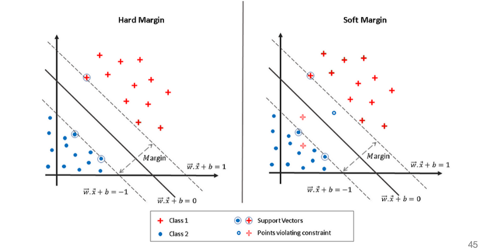
- 线性可分：与分离超平面距离最近的样本点
4. 核函数与非线性 SVM
（1）非线性 SVM 的核心直观
- 问题： 原始样本空间中，数据线性不可分（如异或问题、环形数据）。
- 策略： 将样本从低维空间映射到高维特征空间（Hilbert Space）。根据 Cover 定理，在足够高的维度中，数据更有可能是线性可分的。
- 映射函数： $\phi: \mathcal{X} \to \mathcal{H}$
（2）核技巧 (Kernel Trick)
- 困境： 如果直接计算高维向量 $\phi(x)$，计算复杂度极高，甚至因维度无穷大而无法计算。
- 观察： 在 SVM 对偶问题中，样本仅以内积形式出现：$\langle x_i, x_j \rangle$。在高维空间中对应 $\langle \phi(x_i), \phi(x_j) \rangle$。
- 核函数定义： 设 $\mathcal{X}$ 是输入空间，$\mathcal{H}$ 是特征空间。如果存在函数 $K(x, z)$ 满足： 则称 $K$ 为核函数。
- 作用： 我们不需要显式知道 $\phi(x)$ 是什么，只需在低维空间计算 $K(x, z)$，就能等效达到在高维空间做超平面划分的效果。
（3）对偶问题的修改
引入核函数后，非线性 SVM 的优化目标变为：
决策函数变为：
（4）常用核函数
| 核函数 | 公式 $K(x, z)$ | 特点与应用 |
|---|---|---|
| 线性核 (Linear) | $x \cdot z$ | 无映射。适用于特征维数高的情况。 |
| 多项式核 (Poly) | $(x \cdot z + 1)^d$ | 映射到 $d$ 阶多项式空间。参数多，计算稍慢。 |
| 高斯核 (RBF) | $\exp(-\frac{\lVert x - z \rVert^2}{2\sigma^2})$ | 最常用。映射到无穷维空间。衡量样本相似度。$\gamma$ 越大，模型越复杂（易过拟合）。 |
| Sigmoid 核 | $\tanh(\gamma x \cdot z + r)$ | 类似于神经网络中的激活函数。 |
（5）什么样的函数能做核函数？
- Mercer 定理 (Mercer’s Theorem)：
只要函数 $K$ 满足对称性，且对应的核矩阵（Gram Matrix）是半正定（所有特征值非负）的，它就是合法的核函数。
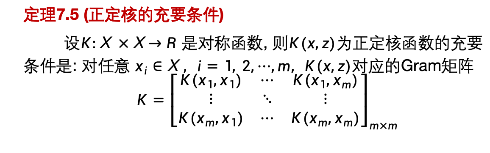
第八章 提升算法
基本思想
偏差和方差
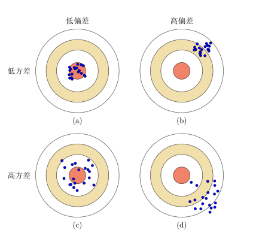
- （b）是欠拟合（高偏差）
- （c）是过拟合（高方差）
集成学习方法
- 并行化：不存在强依赖关系，关注降低方差。代表：随机森林，Bagging
- 序列化：又叫串行化，是强依赖关系，关注降低偏差。代表：Boosting
- 思想：只要找到一个比随机猜测略好（分类误差 <0.5）的弱学习算法，就可以直接将其提升为强学习算法。
$AdaBoost$ 算法
关键词：加法模型、指数损失、前向分布算法
注意点：
- 计算 $G(m)$ 的训练误差 $e_m$
- 计算系数 $\alpha_m =\frac{1}{2}ln\frac{1-e_m}{e_m}$
<0.5（不考计算，但这一点要注意） - 正确分类权值更新：$\times e^{-\alpha}$ ；错误分类权值更新：$\times e^{\alpha}$
- 损失函数：指数损失 $L(y,f(x)) =exp(-yf(x))$
分错样本权值变大，分对样本权值变小，权值和 =1（下图选 $B$）
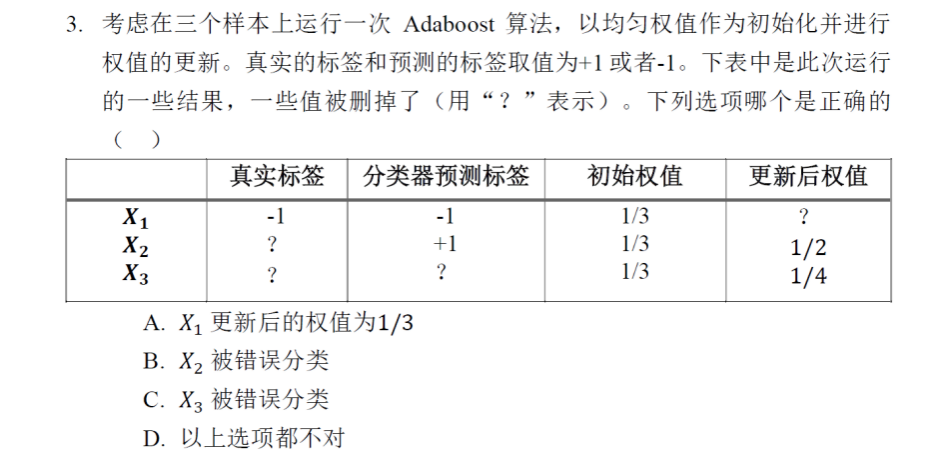- 注意：样本权重 $\omega$ 之和 $=1$，但是基分类器权重 $\alpha_m$ 之和 $\not ={1}$
- 为什么 $AdaBoost$ 对噪声敏感？
因为 AdaBoost 的机制是指数级地增加被分错样本的权重，是串行化模型，关住提高模型准确度（降低偏差），所以对噪声非常敏感。如果数据中存在标签错误的噪声点，模型会投入极大的资源去强行拟合这个噪声，导致正常样本被牺牲，从而过拟合。
第九章 EM算法
1. EM算法的导出
输入：观测变量数据 $X$，隐变量 $Z$，联合分布 $P(X,Z|\theta)$
输出：模型参数 $\theta$
初始化 (Initialization)
- 随机选取模型参数的初值 $\theta^{(0)}$。
- 注：EM 算法对初值敏感，不同的初值可能导致收敛到不同的局部极值。
E步 (Expectation Step)
- 目的：利用当前参数推测隐变量的分布。
- 操作：基于当前参数 $\theta^{(t)}$ 和观测数据 $X$，计算隐变量 $Z$ 的条件概率（后验概率）。
- 构造 Q 函数（即完全数据对数似然函数的期望）：
M步 (Maximization Step)
- 目的：根据推测的隐变量分布，更新模型参数。
- 操作：寻找一个新的参数 $\theta$，使得 Q 函数的值最大化：
收敛判断 (Convergence Check)
- 操作：计算参数的更新幅度 $|\theta^{(t+1)} - \theta^{(t)}|$ 或对数似然函数的增量。
- 判断：
- 若变化量小于预设阈值 $\epsilon$（如 $1e-5$），则停止迭代，输出最终参数 $\hat{\theta} = \theta^{(t+1)}$。
- 否则，令 $t \leftarrow t+1$，返回第 2 步继续迭代。
2. EM算法的收敛性
(1). 核心性质：单调递增
EM 算法保证每次迭代后，观测数据的对数似然函数值是非递减的。即：
由于似然函数通常有上界（Bounded from above），单调递增且有上界的序列必然收敛。
(2). 数学原理：下界逼近
- 原理：EM 算法并不直接优化复杂的 $L(\theta)$，而是优化其下界。
- 工具：利用 Jensen 不等式 (Jensen’s Inequality) 构造下界函数 $B(\theta, \theta^{(t)})$。
- 过程：通过最大化下界 Q 函数，间接推高了原目标函数 $L(\theta)$。
(3). 收敛目标：局部最优
- EM 算法不能保证收敛到全局最优解 (Global Maximum)。
- 它通常收敛到似然函数的稳定点 (Stationary Point)，大多数情况下是局部极大值 (Local Maximum)。
- 只有在目标函数是凸函数（Concave）等特殊情况下，才能保证全局最优。
(4). 工程启示
- 初值敏感性：由于存在多个局部极值，最终结果高度依赖于初始参数 $\theta^{(0)}$ 的选择。
- 解决方案：采用多次随机初始化 (Random Restarts)，取结果最好的那一组；或使用 K-Means 等算法预热初始化。
- 收敛速度：算法在迭代初期收敛较快，但在接近极值点时收敛速度变慢（通常为一阶线性收敛）。
3. 高斯混合模型 (GMM)
在统计学习和模式识别中，高斯混合模型 (GMM) 和 EM 算法 通常是绑定出现的。简单来说：GMM 是我们要建立的模型（Model），而 EM 算法是用于训练该模型的优化方法（Optimization Method）。
(1). 高斯混合模型 (GMM)
直观理解
传统的聚类算法（如 K-Means）是硬聚类，即一个样本点要么属于 A 类，要么属于 B 类。但在实际应用中，很多数据具有模糊性（Ambiguity）。
GMM (Gaussian Mixture Model) 是一种软聚类模型。它假设数据是由 $K$ 个不同的高斯分布（正态分布）混合生成的。对于每一个数据点，模型给出的是它属于每个簇的概率。
数学定义
GMM 的概率密度函数定义为 $K$ 个高斯密度的加权和：
其中：
- $x$: 观测数据。
- $\pi_k$: 混合系数 (Mixing Coefficient)，即第 $k$ 个高斯分布被选中的概率，满足 $\sum \pi_k = 1$ 且 $\pi_k \ge 0$。
- $\mathcal{N}(x | \mu_k, \Sigma_k)$: 第 $k$ 个高斯分布密度函数，参数为均值 $\mu_k$ 和协方差矩阵 $\Sigma_k$。
我们需要估计的参数集合为 $\theta = { \pi_1, \dots, \pi_K, \mu_1, \dots, \mu_K, \Sigma_1, \dots, \Sigma_K }$。
(2). 为什么需要 EM 算法？
如果我们知道每个样本具体属于哪个高斯分布（即已知隐变量 Latent Variable），我们直接用极大似然估计 (MLE) 就可以算出 $\mu$ 和 $\Sigma$。
但在非监督学习中，我们不知道样本的类别标签。这就陷入了一个“鸡生蛋，蛋生鸡”的循环：
- 要算出参数 $\theta$，需要先知道每个样本属于哪个分布（隐变量）。
- 要知道样本属于哪个分布，又需要先有准确的参数 $\theta$ 来计算概率。
EM 算法 (Expectation-Maximization Algorithm) 正是为了解决这种含有隐变量的概率模型参数估计问题。
(3). EM 算法在 GMM 中的流程
EM 算法通过迭代的方式逼近最优解，主要分为两步：E步（期望步）和 M步（最大化步）。
Step 0: 初始化
随机初始化参数 $\mu_k, \Sigma_k, \pi_k$。
Step 1: E-step (计算责任/后验概率)
固定参数，计算第 $n$ 个样本来自第 $k$ 个分模型的概率（也称为“责任” $\gamma_{nk}$）：
直观解释：看当前这个点，在第 $k$ 个分布里的相对密度有多大。
Step 2: M-step (更新参数)
利用 E 步算出的 $\gamma_{nk}$ 作为权重，重新估计参数（最大化 Q 函数）：
- 更新均值 $\mu_k$（加权平均）：
- 更新协方差 $\Sigma_k$（加权协方差）：
- 更新混合系数 $\pi_k$：其中 $Nk = \sum{n=1}^{N} \gamma_{nk}$ 是第 $k$ 类权重的总和。
Step 3: 收敛判断
重复 E 步和 M 步，直到对数似然函数 (Log-Likelihood) 的增长小于阈值，或参数不再变化。
(4). GMM vs K-Means
| 维度 | K-Means | GMM (高斯混合模型) |
|---|---|---|
| 聚类性质 | 硬聚类 (0 或 1) | 软聚类 (概率分布) |
| 模型假设 | 假设簇是球状的 (方差一致) | 假设簇是高斯分布 (可通过协方差描述椭圆) |
| 参数复杂度 | 仅中心点 (Centroids) | 中心点 + 协方差矩阵 + 混合系数 |
| 本质关系 | GMM 的一种特例 | EM 算法的通用应用 |
| 对异常值 | 敏感 | 相对鲁棒 (概率模型具有一定容错性) |
推导
引理9.2
Q函数
第十章 聚类方法
1. 层次聚类
- 聚类是无监督学习
聚类的核心参数
- 距离（马氏距离、L距离）
- 距离越小，样本越相似
- 相似度（夹角余弦、相关系数）
- 相似度越大，样本越相似
- 直接影响聚类结果，其选择是聚类的根本问题。
硬聚类 & 软聚类
- 一个样本只能属于一个类，就叫硬聚类。
- 一个样本可以属于多个类，就叫软聚类。
一些概念
假设有两个类：$G_p , G_q$
- 类的中心：一个类中所有样本的均值
- 类的直径：两个距离最远的样本距离
- 单连接：两个类中最近样本的距离
- 完全连接：两个类中最远样本的距离
- 中心距离：两个样本中心间的距离
- 平均距离：两个样本中所有样本的平均距离
注意：做层次聚类题目的时候注意要求是按照单连接/完全连接来聚类，画图的时候长度要按比例。
聚合聚类 & 分裂聚类
聚合聚类（自下而上聚类）
- 开始将每个样本各自分到一个类
- 之后将相距最近的两类合并，建立一个新的类
- 重复此操作直到满足停止条件
分裂聚类（自上而下聚类）
- 开始将所有样本分到一个类
- 之后将已有类中相距最远的样本分到两个新的类
- 重复此操作直到满足停止条件
2. K-mean
- 硬聚类、分成 k 个簇、非层次化、无监督学习
(1). 核心原理
算法的核心目标是将 $n$ 个样本点划分到 $K$ 个簇 (Cluster) 中，使得每个样本点到其所属簇的中心的距离平方和最小。
- 输入：样本集 $X$，聚类簇数 $K$。
- 输出：$K$ 个簇的质心向量 $\mu$ 及每个样本的类别标签。
(2). 损失函数
最小化每个簇内样本点到中心的距离之和：
其中：
- $C_k$：第 $k$ 个簇。
- $\mu_k$：第 $k$ 个簇的中心。
- $|| x - \mu_k ||^2$：欧几里得距离的平方。
(3). 算法流程
K-Means 的迭代过程体现了 EM (Expectation-Maximization) 的思想：
初始化：
随机选择 $K$ 个样本点作为初始中心 ${ \mu_1, \dots, \mu_K }$。分配阶段 —— 对应 E-step
计算每个样本 $x^{(i)}$ 到各个中心的距离，将其分配给最近的中心：更新阶段 —— 对应 M-step
重新计算每个簇的中心：收敛判断：
重复步骤 2 和 3，直到中心位置不再变化或变化非常小（小于阈值）。
(4). 初值选择的解决（K-means++）
- 问题：传统的随机初始化可能导致陷入局部最优解。
- 解法：K-Means++：
- 第一个质心随机选。
- 后续质心选择时，距离当前已有质心越远的点，被选中的概率越大。
- 以此优化初始质心的分布。
（优点：减少局部最优风险，加快收敛速度，更好聚类效果）
(5). 优缺点分析
| 优点 | 缺点 |
|---|---|
| 原理简单，易于理解和实现。 | 需要预先指定 K 值（k-means++/elbow方法），且 K 值对结果影响大。 |
| 收敛速度快，时间复杂度近乎线性 $O(N \cdot K \cdot I)$。 | 对初始中心选择敏感，可能陷入局部最优。 |
| 适合处理球状分布、密集的簇。 | 噪声敏感，噪声会拉偏均值。 |
| 无法处理非凸形状，且高维数据处理能力差 。 |